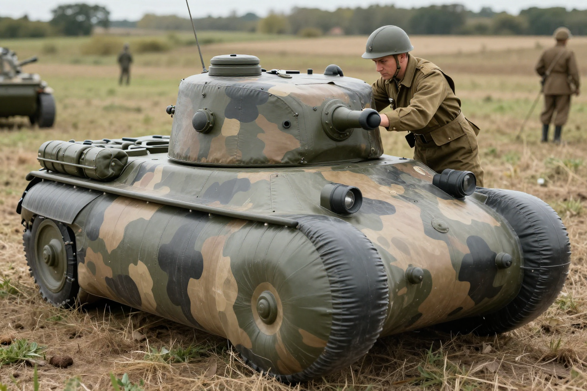
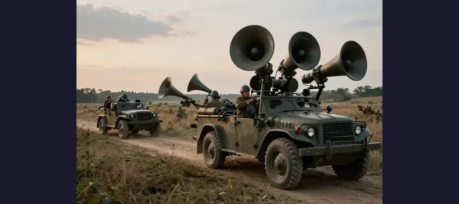

The Ghost Army: How Fake Tanks and Sound Effects Helped Win WWII

Soldiers of the Ghost Army with their inflatable Sherman tanks - fake weapons that helped win a real war!
Imagine winning battles without firing a single shot. During World War II, a top-secret U.S. Army unit did exactly that — using inflatable tanks, recorded sound effects, and phony radio messages to fool Nazi Germany into believing American forces were places they weren't.
This unit was officially called the 23rd Headquarters Special Troops, but they became known as the Ghost Army. Their missions were classified for over 40 years after the war ended.
Overview
The Most Creative Unit in Military History
Activated in 1944, the Ghost Army had about 1,100 soldiers — but they were unlike any other unit in the war. Instead of combat training, these men were recruited for their artistic talents. Many were artists, designers, sound engineers, and actors recruited directly from places like the Art Institute of Chicago and advertising agencies.
Their job was simple but extraordinary: create illusions that deceived the enemy. They staged over 20 deception operations across Europe, from the beaches of Normandy to the banks of the Rhine River.

These inflatable tanks looked real from the air - and that is exactly what Nazi reconnaissance pilots saw!
🎨 Artists Turned Soldiers
The Ghost Army included future famous artists like Bill Blass (fashion designer), Ellsworth Kelly (painter/sculptor), and Art Kane (photographer). Their creative skills became weapons of war!
Evidence
A useful way to read this evidence is by confidence level. High-confidence points are independently confirmed by multiple sources; medium-confidence points are plausible but debated; low-confidence points stay provisional until stronger data appears.
Historical work on the Ghost Army is strongest when declassified military records, veteran testimonies, and German intelligence documents align. The story is well-documented but was kept secret for decades.
Three Weapons of Deception
The Ghost Army used three main techniques to create their illusions:
- 🎈 Inflatable Vehicles: Full-size rubber tanks, trucks, artillery pieces, and even aircraft that looked real from 100 feet away
- 🔊 Sound Warfare: Giant speakers mounted on half-trucks that broadcast recorded sounds of tanks, trucks, and bridge-building — audible up to 15 miles away
- 📻 Radio Deception: Skilled radio operators mimicked the communication patterns of real Army units, fooling German intelligence intercepts
Competing Explanations
Competing explanations usually persist because each one fits part of the evidence while missing another part. Researchers test these models against chronology, physical constraints, and independent documentation to identify which interpretation requires the fewest assumptions.
Did It Actually Work?

Giant speakers broadcast tank sounds that could be heard 15 miles away!
Declassified records and German intelligence reports confirm the deceptions were remarkably effective. In one key operation, the Ghost Army impersonated two full divisions (about 30,000 troops) with just 1,100 men. The Germans redirected their forces based on the fake army, allowing the real American forces to cross the Rhine River with minimal casualties.
Some historians estimate the Ghost Army's deceptions saved between 15,000 and 30,000 American lives over the course of the war. Not bad for a unit that rarely fired a weapon in combat!
🏅 Finally Recognized
The Ghost Army's story was classified until 1996. In 2022, the unit was finally awarded the Congressional Gold Medal — one of America's highest civilian honors — more than 77 years after the war ended!
Open Questions
Open questions remain because source quality is uneven across time: some records are direct and detailed, while others are fragmentary or second-hand. Future archival discoveries, improved imaging, and more precise dating methods may refine conclusions without overturning well-supported core findings.
Lessons From the Ghost Army
The full extent of the Ghost Army's operations may never be completely known. Some records were destroyed, and many veterans took their stories to the grave. As the last surviving members pass away, new details occasionally surface through family archives and personal letters.
The Ghost Army's techniques influenced military strategy for decades. Modern military deception operations still draw on principles pioneered by this creative unit.
The Ghost Army proves that sometimes the most powerful weapon in war is a really good story!
📖 Recommended Reading
Want to learn more? Check out The Ghost Army of World War II: How One Top-Secret Unit Deceived the Enemy with Inflatable Tanks, Sound Effects, and Other Audacious Fakery on Amazon for a deeper dive into this fascinating topic. (As an Amazon Associate, we earn from qualifying purchases.)
References & Further Reading
- Ghost Army Legacy Project official site
- Smithsonian Magazine feature on the Ghost Army
- History.com article on inflatable tank deception
- National WWII Museum Ghost Army exhibit
- Google Scholar literature search
Editorial note: reconstructions are continuously revised as imaging and inscription studies improve. See our Editorial Policy.